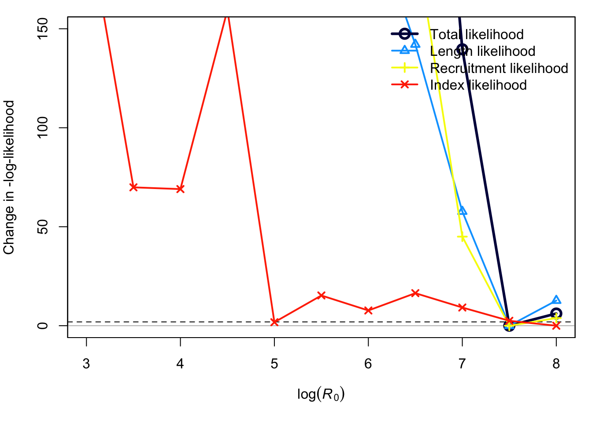
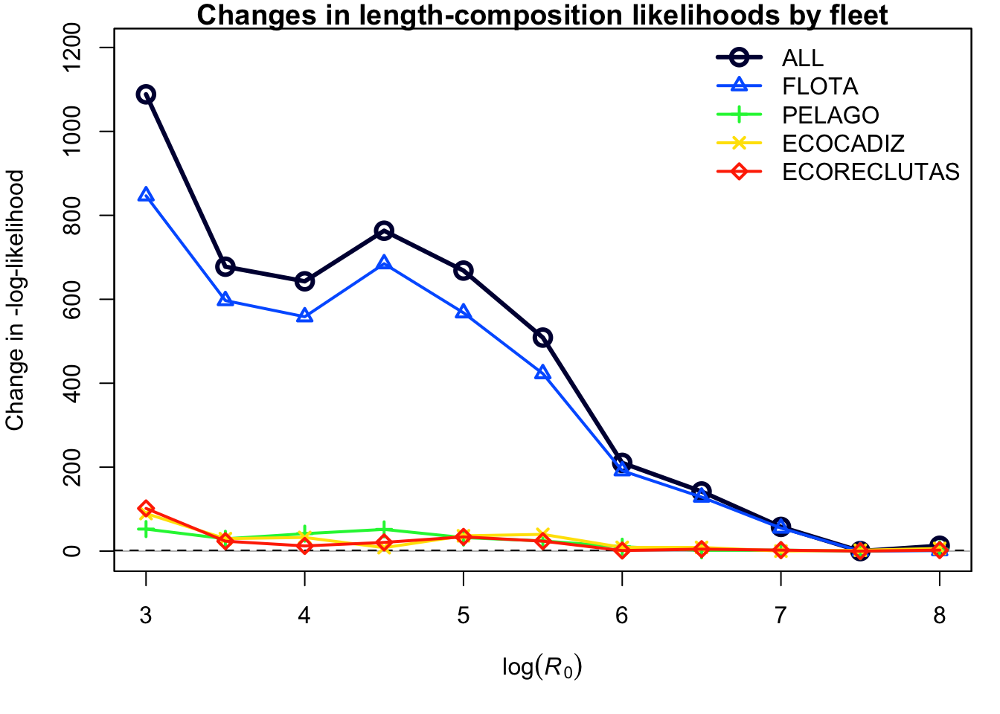
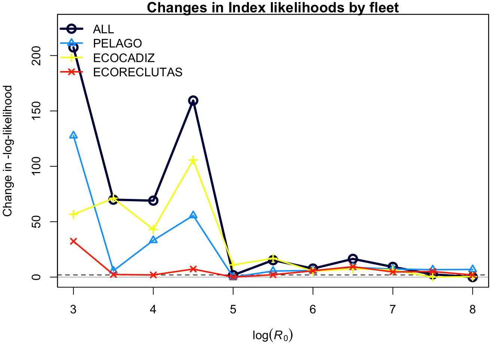

Código original extraído desde https://github.com/jabbamodel/ss3diags https://github.com/jabbamodel/ss3diags/blob/master/Cookbook/Likelihood_profile_R0_example.R
library(here)
library(r4ss)
library(ss3diags)
library(doParallel) # facilita la ejecución paralela en R
detectCores()## [1] 6#'*Crear un nuevo directorio para el `Perfil_Verosimilitud`*
dirname.R0.profile <- here("Perfil_Verosimilitud")
dir.create(path=dirname.R0.profile, showWarnings = TRUE, recursive = TRUE)#'*Crear un subdirectorio llamado `plots_Verosimilitud`*
plotdir=paste0(dirname.R0.profile, "/plots_Verosimilitud_S1")
dir.create(path=plotdir, showWarnings = TRUE, recursive = TRUE)#'*Crear un subdirectorio llamado `S1`*
reference.dir <- paste0(dirname.R0.profile,'/S1')
dir.create(path=reference.dir, showWarnings = TRUE, recursive = TRUE)#'*Copiar el resultado del modelo base completo en este directorio*
file.copy(Sys.glob(paste(dir.base, "*.*", sep="/"),
dirmark = FALSE),
reference.dir)## [1] FALSE FALSE FALSE FALSE FALSE FALSE FALSE FALSE FALSE FALSE FALSE FALSE
## [13] FALSE FALSE FALSE FALSE FALSE FALSE FALSE FALSE FALSE FALSE FALSE FALSE
## [25] FALSE FALSE FALSE FALSE FALSE FALSE FALSE FALSE FALSE FALSE FALSE FALSE
## [37] FALSE FALSE FALSE FALSE FALSE FALSE FALSE FALSE FALSE FALSE FALSE FALSE
## [49] FALSE FALSE FALSE FALSE FALSE# Identificar el directorio donde está el archivo ejecutable y copiarlo
exe_path <- here("Ejecutables_SS3","3.30.20_release")
file.copy(paste0(exe_path,"/ss_osx"),reference.dir)
#### Ejecutar el modelo ----
# Entramos en el directorio desde la terminal
system(paste0("cd ",reference.dir,"/"))
# Permitimos que el ordenador pueda abrir el ejecutable (terminal)
system(paste0("chmod 755 ",reference.dir,"/ss_osx"))
r4ss::run(dir=reference.dir, exe="ss_osx", skipfinished=FALSE)## $SS_version
## [1] "3.30.20.00;_safe;_compile_date:_Sep 30 2022;_Stock_Synthesis_by_Richard_Methot_(NOAA)_using_ADMB_13.0"
##
## $SS_versionshort
## [1] "3.30"
##
## $SS_versionNumeric
## [1] 3.3
##
## $StartTime
## [1] "StartTime: Fri Sep 29 19:50:47 2023"
##
## $RunTime
## [1] "0 hours, 1 minutes, 37 seconds."
##
## $Files_used
## [1] "Data_File: data.ss Control_File: control_modified.ss"
##
## $log_det_hessian
## [1] 272.303
##
## $Final_phase
## [1] 6
##
## $N_iterations
## [1] 1524
##
## $Nwarnings
## [1] 11
##
## $warnings
## [1] "Note 1 Information: settle_month is less than spawn_month, so logical age at settlement calculated to be: 1 for settle_time 1. Does not match read value of 0 are you sure? "
## [2] "Note 2 Information: settle_month is less than spawn_month, so logical age at settlement calculated to be: 1 for settle_time 2. Does not match read value of 0 are you sure? "
## [3] "Warning 1 Adjustment: recdev_end: 2021 > retro_yr: 2017 reset "
## [4] "Warning 2 : parameter init value is greater than parameter max 3.278 > 3 for parm: 7; search for <now check> in echoinput.sso for parm_type"
## [5] "Warning 3 : poor convergence in Fmsy, final dy/dy2= -0.302134"
## [6] "Warning 4 : Fmsy/mey is >3x of Fspr are you sure? check for convergence "
## [7] "Warning 5 : Fmsy.mey is close to max allowed; check for convergence "
## [8] "Warning 6 : Forecast F capped by max possible F from control file4"
## [9] "Warning 7 : Forecast F capped by max possible F from control file4"
## [10] "Note 3 Information: N parameters that are on or within 1% of min-max bound: 4; check results, variance may be suspect"
## [11] " 7 warnings and 3 notes "
##
## $likelihoods_used
## values lambdas
## TOTAL 1330.269999999999981810 NA
## Catch 0.000000000000166735 NA
## Equil_catch 0.000000000000000000 NA
## Survey -1.440630000000000077 NA
## Length_comp 1290.279999999999972715 NA
## Recruitment 17.039699999999999847 1
## InitEQ_Regime 0.000000000000000000 1
## Forecast_Recruitment 0.000000000000000000 1
## Parm_priors 0.036727900000000001 1
## Parm_devs 24.355699999999998795 1
## Crash_Pen 0.000000000000000000 1
##
## $likelihoods_laplace
## values lambdas
## NoBias_corr_Recruitment(info_only) 2.22581 1
## Laplace_obj_fun(info_only) 1315.46000 NA
##
## $likelihoods_by_fleet
## Label ALL FLOTA PELAGO ECOCADIZ ECORECLUTAS
## 181 Catch_lambda NA 1.00000e+00 1.000000 1.00000 1.000000
## 182 Catch_like 1.66735e-13 1.66735e-13 0.000000 0.00000 0.000000
## 183 Init_equ_lambda NA 1.00000e+00 1.000000 1.00000 1.000000
## 184 Init_equ_like 0.00000e+00 0.00000e+00 0.000000 0.00000 0.000000
## 185 Surv_lambda NA 0.00000e+00 1.000000 1.00000 1.000000
## 186 Surv_like -1.44063e+00 0.00000e+00 0.425343 -1.09626 -0.769712
## 187 Surv_N_use NA 0.00000e+00 15.000000 10.00000 4.000000
## 188 Surv_N_skip NA 0.00000e+00 4.000000 3.00000 4.000000
## 189 Length_lambda NA 1.00000e+00 1.000000 1.00000 1.000000
## 190 Length_like 1.29028e+03 1.06871e+03 107.733000 74.21830 39.621400
## 191 Length_N_use NA 1.16000e+02 15.000000 10.00000 4.000000
## 192 Length_N_skip NA 1.60000e+01 4.000000 3.00000 4.000000
##
## $Parm_devs_detail
## Index Phase MinYr MaxYr N stddev Rho Like_devs Like_se mean rmse
## 196 1 3 1989 2021 33 0.5 0 4.19436 0 0.0790836 0.504186
## 197 2 3 1989 2021 33 0.5 0 8.25144 0 -0.0650198 0.707169
## 198 3 3 1989 2021 33 0.5 0 8.41402 0 -0.0302926 0.714101
## 199 4 3 1989 2021 33 0.5 0 3.49589 0 0.0162288 0.460296
## var sqrt(var) est_rho D-W
## 196 0.247949 0.497945 0.5950960 0.844345
## 197 0.495860 0.704173 -0.0757055 2.146310
## 198 0.509023 0.713458 0.1253810 1.756730
## 199 0.211609 0.460010 0.5507220 0.931858
##
## $N_estimated_parameters
## [1] 186
##
## $table_of_phases
##
## -99 -50 -6 -5 -4 -1 1 2 3 5 6
## 1 8 5 4 1 10 32 6 139 4 5
##
## $estimated_non_dev_parameters
## Value Phase Min Max Init
## L_at_Amin_Fem_GP_1 0.00000000886242 5 0.00 15.00 6.00000
## L_at_Amax_Fem_GP_1 12.84450000000000 5 5.00 22.00 19.00000
## VonBert_K_Fem_GP_1 2.00000000000000 3 0.10 2.00 0.89000
## CV_young_Fem_GP_1 0.13847200000000 5 0.03 0.15 0.10000
## CV_old_Fem_GP_1 0.14242800000000 5 0.03 0.15 0.10000
## RecrDist_GP_1_area_1_month_2 6.71055000000000 2 -3.00 10.00 0.25000
## RecrDist_GP_1_area_1_month_5 8.85092000000000 2 -3.00 10.00 0.25000
## RecrDist_GP_1_area_1_month_8 9.35458000000000 2 -3.00 10.00 0.25000
## RecrDist_GP_1_area_1_month_11 7.80905000000000 2 -3.00 10.00 0.25000
## LnQ_base_PELAGO(2) -1.60100000000000 1 -30.00 15.00 0.08918
## LnQ_base_ECOCADIZ(3) -1.40350000000000 1 -30.00 15.00 0.08918
## LnQ_base_ECORECLUTAS(4) -1.65811000000000 1 -30.00 15.00 0.08918
## Size_inflection_FLOTA(1) 8.25335000000000 2 -1.00 20.00 12.00000
## Size_95%width_FLOTA(1) 3.65653000000000 2 -1.00 20.00 18.00000
## Size_inflection_PELAGO(2) 8.00000000000000 3 -3.00 8.00 6.00000
## Size_95%width_PELAGO(2) 2.49872000000000 3 -3.00 16.00 10.00000
## Size_inflection_ECOCADIZ(3) 10.00000000000000 3 -1.00 10.00 8.00000
## Size_95%width_ECOCADIZ(3) 2.52853000000000 3 -1.00 20.50 15.00000
## Size_inflection_ECORECLUTAS(4) 7.61685000000000 3 -1.00 10.00 8.00000
## Size_95%width_ECORECLUTAS(4) 1.19778000000000 3 -1.00 20.50 15.00000
## Status Parm_StDev Gradient Pr_type
## L_at_Amin_Fem_GP_1 LO 0.0000343238 0.0000006339640 No_prior
## L_at_Amax_Fem_GP_1 OK 0.0844023000 -0.0000086386700 No_prior
## VonBert_K_Fem_GP_1 HI 0.0000156370 -0.0000003892960 No_prior
## CV_young_Fem_GP_1 OK 0.0174224000 -0.0000000706491 No_prior
## CV_old_Fem_GP_1 OK 0.0052987300 -0.0000006639940 No_prior
## RecrDist_GP_1_area_1_month_2 OK 2944.5500000000 -0.0000017989100 No_prior
## RecrDist_GP_1_area_1_month_5 OK 2944.5500000000 0.0000036002700 No_prior
## RecrDist_GP_1_area_1_month_8 OK 2944.5500000000 -0.0000002731480 No_prior
## RecrDist_GP_1_area_1_month_11 OK 2944.5500000000 -0.0000010703900 No_prior
## LnQ_base_PELAGO(2) OK 0.1028790000 -0.0000004074630 No_prior
## LnQ_base_ECOCADIZ(3) OK 0.1255210000 0.0000036731600 No_prior
## LnQ_base_ECORECLUTAS(4) OK 0.1826350000 0.0000023568200 No_prior
## Size_inflection_FLOTA(1) OK 0.1872240000 -0.0000046515200 No_prior
## Size_95%width_FLOTA(1) OK 0.1936060000 0.0000007424140 No_prior
## Size_inflection_PELAGO(2) HI 0.0000284495 -0.0000003276200 No_prior
## Size_95%width_PELAGO(2) OK 0.3822190000 0.0000007963460 No_prior
## Size_inflection_ECOCADIZ(3) HI 0.0000425372 0.0000018494400 No_prior
## Size_95%width_ECOCADIZ(3) OK 0.3000920000 -0.0000003157790 No_prior
## Size_inflection_ECORECLUTAS(4) OK 0.3840290000 -0.0000015206400 No_prior
## Size_95%width_ECORECLUTAS(4) OK 0.4634920000 0.0000012958500 No_prior
## Prior Pr_SD Pr_Like Afterbound
## L_at_Amin_Fem_GP_1 NA NA NA CHECK
## L_at_Amax_Fem_GP_1 NA NA NA OK
## VonBert_K_Fem_GP_1 NA NA NA CHECK
## CV_young_Fem_GP_1 NA NA NA OK
## CV_old_Fem_GP_1 NA NA NA OK
## RecrDist_GP_1_area_1_month_2 NA NA NA OK
## RecrDist_GP_1_area_1_month_5 NA NA NA OK
## RecrDist_GP_1_area_1_month_8 NA NA NA OK
## RecrDist_GP_1_area_1_month_11 NA NA NA OK
## LnQ_base_PELAGO(2) NA NA NA OK
## LnQ_base_ECOCADIZ(3) NA NA NA OK
## LnQ_base_ECORECLUTAS(4) NA NA NA OK
## Size_inflection_FLOTA(1) NA NA NA OK
## Size_95%width_FLOTA(1) NA NA NA OK
## Size_inflection_PELAGO(2) NA NA NA CHECK
## Size_95%width_PELAGO(2) NA NA NA OK
## Size_inflection_ECOCADIZ(3) NA NA NA CHECK
## Size_95%width_ECOCADIZ(3) NA NA NA OK
## Size_inflection_ECORECLUTAS(4) NA NA NA OK
## Size_95%width_ECORECLUTAS(4) NA NA NA OK
##
## $maximum_gradient_component
## [1] 8.63867e-06
##
## $parameters_with_highest_gradients
## Value Gradient
## L_at_Amax_Fem_GP_1 1.28445e+01 -8.63867e-06
## RecrDist_GP_1_area_1_month_5_DEVrwalk_1989 9.41066e-08 5.88157e-06
## RecrDist_GP_1_area_1_month_5_DEVrwalk_1990 2.90910e-01 5.48136e-06
## RecrDist_GP_1_area_1_month_5_DEVrwalk_1992 1.31745e+00 4.81990e-06
## Size_inflection_FLOTA(1) 8.25335e+00 -4.65152e-06
##
## $Length_Comp_Fit_Summary
## Data_type Fleet Recommend_var_adj # N Npos min_Nsamp max_Nsamp
## 1915 4 1 1.08451 # 132 116 23.1035 23.1035
## 1916 4 2 1.33019 # 19 15 21.3541 21.3541
## 1917 4 3 1.29911 # 13 10 32.6354 32.6354
## 1918 4 4 0.83298 # 8 4 25.3867 25.3867
## mean_Nsamp_in mean_Nsamp_adj mean_Nsamp_DM err_method err_index
## 1915 22 23.1035 NA 0 NA
## 1916 18 21.3541 NA 0 NA
## 1917 29 32.6354 NA 0 NA
## 1918 22 25.3867 NA 0 NA
## par1 val1 par2 val2 mean_effN HarMean Curr_Var_Adj Fleet_name
## 1915 multinomial NA NA NA 47.6041 23.8592 1.05016 FLOTA
## 1916 multinomial NA NA NA 43.9916 23.9435 1.18634 PELAGO
## 1917 multinomial NA NA NA 78.3438 37.6742 1.12536 ECOCADIZ
## 1918 multinomial NA NA NA 21.6585 18.3256 1.15394 ECORECLUTAS
##
## $SBzero
## [1] 46169
##
## $current_depletion
## [1] 0.9163161
##
## $last_years_SPR
## [1] 0.573685
##
## $SPRratioLabel
## [1] "1-SPR"
##
## $sigma_R_in
## [1] 0.6
##
## $sigma_R_info
## period N_devs SD_of_devs Var_of_devs mean_SE mean_SEsquared
## 1 Main 29 0.6619404 0.4381651 0.2645150 0.07500462
## 2 Early+Main 29 0.6619404 0.4381651 0.2645150 0.07500462
## 3 Early+Main+Late 33 0.6191885 0.3833945 0.3051798 0.10954952
## sqrt_sum_of_components SD_of_devs_over_sigma_R sqrt_sum_over_sigma_R
## 1 0.7163586 1.103234 1.193931
## 2 0.7163586 1.103234 1.193931
## 3 0.7020997 1.031981 1.170166
## alternative_sigma_R
## 1 0.7163586
## 2 0.7163586
## 3 0.7020997
##
## $rmse_table
## ERA N RMSE RMSE_over_sigmaR mean_BiasAdj
## 1 main 29 0.650427 1.17516 0
## 2 early 0 0.000000 0.00000 0#'* 7. Copiar los archivos necesarios de `S1` al directorio `Perfil_Verosimilitud` con la función `copy_SS_inputs()` *
#
# copy_SS_inputs(dir.old = reference.dir,
# dir.new = dirname.R0.profile,
# copy_exe = TRUE,
# verbose = FALSE)#'* 8. Leer los archivos del modelo `SS_read()` *
inputs <- r4ss::SS_read(dir = reference.dir,ss_new = FALSE, verbose = FALSE)#'* 10. Editar el archivo starter para leer los valores de inicio *
inputs$start$init_values_src <- 0#'* 12. Cambiar el nombre del archivo control en el archivo `starter.ss`*
inputs$start$ctlfile <- "control_modified.ss" #'* 14. Escribir los modelos modificados `SS_write()`*
r4ss::SS_write(inputs, dir = reference.dir, overwrite = TRUE)#'* 15. Ejecutar la función `SS_profile()` *
#?SS_profile()
# profile <- profile(dir=reference.dir, # directory
# model="ss_osx",#"ss_win",
# masterctlfile="control.ss",
# newctlfile="control_modified.ss",
# string="SR_LN(R0)",
# profilevec=R0.vec)
profile <- profile(
dir = reference.dir,
oldctlfile = "control.ss",
newctlfile = "control_modified.ss",
string = "SR_LN(R0)", # subset of parameter label
profilevec = R0.vec,
exe = "ss_osx"
)#'* 16. Leer los archivos de salida `SSgetoutput()` *
#'*(con nombres como Report1.sso, Report2.sso, etc.)*
prof.R0.models <- SSgetoutput(dirvec=reference.dir,
keyvec=1:Nprof.R0,
getcovar = FALSE) #'*17. Resumir las salidas con la función `SSsummarize()`*
prof.R0.summary <- SSsummarize(prof.R0.models)#'* 18. Identificar los componentes de Verosimilitud *
mainlike_components <- c('TOTAL',"Survey", 'Length_comp',"Age_comp",'Size_at_age','Recruitment')
mainlike_components_labels <- c('Total likelihood','Index likelihood','Length likelihood',"Age likelihood",'Size_at_age likelihood','Recruitment likelihood') #'* 19. Funciones para generar plots de perfil de verosimilitud*
#'*`SSplotProfile()`*
#png(file.path(plotdir,"R0_profile_plot.png"),width=7,height=4.5,res=300,units='in')
par(mar=c(5,4,1,1))
SSplotProfile(prof.R0.summary, # summary object
profile.string = "R0", # substring of profile parameter
profile.label=expression(log(italic(R)[0])), ymax=150,minfraction = 0.001,
pheight=4.5,
print=FALSE,
plotdir=plotdir,
components = mainlike_components,
component.labels = mainlike_components_labels,
add_cutoff = TRUE,
cutoff_prob = 0.95)## frac_change include label
## TOTAL 1.0000 TRUE Total likelihood
## Survey 0.0549 TRUE Index likelihood
## Length_comp 0.2881 TRUE Length likelihood
## Recruitment 0.2383 TRUE Recruitment likelihoodBaseval <- round(Base$parameters$Value[grep("R0",Base$parameters$Label)],2)
Baselab <- paste(Baseval,sep="")
axis(1,at=Baseval,label=Baselab)
abline(v = Baseval, lty=2)
#'* Comparación de series de tiempo `SSplotComparisons()` *
labs <- paste("SR_Ln(R0) = ",R0.vec)
labs[which(round(R0.vec,2)==Baseval)] <- paste("SR_Ln(R0) = ",Baseval,"(Base model)")
SSplotComparisons(prof.R0.summary,
legendlabels=labs,
pheight=4.5,png=TRUE,
plotdir=plotdir,
legendloc='bottomleft')#'* R0_profile_plot_Length_like `PinerPlot()`*
#png(file.path(plotdir,"R0_profile_plot_Length_like.png"),width=7,height=4.5,res=300,units='in')
par(mar=c(5,4,1,1))
PinerPlot(prof.R0.summary,
profile.string = "R0",
component = "Length_like",
main = "Changes in length-composition likelihoods by fleet",
add_cutoff = TRUE,
cutoff_prob = 0.95)
Baseval <- round(Base$parameters$Value[grep("SR_LN",Base$parameters$Label)],2)
Baselab <- paste(Baseval,sep="")
axis(1,at=Baseval,label=Baselab)
abline(v = Baseval, lty=2)
#'* R0_profile_plot_Survey_like*
#png(file.path(plotdir,"R0_profile_plot_Survey_like.png"),width=7,height=4.5,res=300,units='in')
par(mar=c(5,4,1,1))
PinerPlot(prof.R0.summary, profile.string = "R0", component = "Surv_like",main = "Changes in Index likelihoods by fleet",
add_cutoff = TRUE,
cutoff_prob = 0.95, legendloc="topleft")
Baseval <- round(Base$parameters$Value[grep("SR_LN",Base$parameters$Label)],2)
Baselab <- paste(Baseval,sep="")
axis(1,at=Baseval,label=Baselab)
abline(v = Baseval, lty=2)